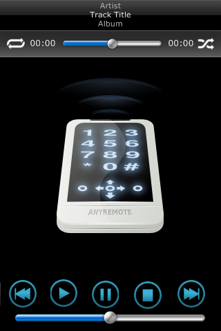

|

It is posible to use Command Fusion iViewer
with anyRemote. iViewer
is an remote control application for iPhone and iPod Touch.
Installation of iViewer
To install iViewer on an iPhone or iPod Touch,
please follow the procedure below:
- On your iPhone or iPod Touch, open the AppStore.
- Press the 'Search' button in the bottom menu to access the Search page.
- Search for 'iViewer'.
- Select 'CF iViewer' from the search results.
- Press the 'Free' button, followed by 'Install'.
- Enter your iTunes Store account details.
- The device will then go back to the home menu and begin installing.
- Once finished, the CF iViewer app icon (house with blue background) will be visible.
Download anyremote-iviewer package and edit GUI file
- Download anyremote-iviewer package from download page
- Unzip tarball inside $HOME/.anyRemote and rename directory anyremote-iViewer-XXX to iviewer
- Edit $HOME/.anyRemote/iviewer/anyremote.gui file and update line with IP address to the IP of Your PC
Web server setup
Download GUI file to the iPhone/iPod Touch
Before launching the application, the settings must be entered. Otherwise the default built-in GUI will load,
which attempts to connect a demo Crestron server.
- Open the 'Settings' application on your iPhone or iPod Touch (silver icon with gears).
- Scroll to the bottom and select 'iViewer' from the list.
- Password for anyRemote is default blank.
- Enter the URL to the GUI file: http://"IP of Your PC":5003/anyremote.gui
- If you want the GUI to be updated from the file path on every load (when making changes to
the GUI for example) turn ON the 'Reload GUI file' option.
Use it
Run anyRemote with -s socket:5000 -f /path/to/cfg-data/iViever/_some_file_ command line options. For example:
anyremote -s socket:5000 -f /path/to/cfg-data/iViever/amarok.cfg
You may find some configuration files in cfg-data/iViewer directory.
Notes
- Do not mix ports of web server and port of anyRemote (5003 and 5000 in the text above).
These are different ports: 5003 used by iViever to upload GUI file and 5000 is used by anyRemote
to communicate with iViewer. Therefore You need to specify port 5000 in anyremote.gui and port 5003
in Settings of CF iViewer on iphone/iPod Touch.
- In case of connection problem be sure that firewall on PC is configured correctly. As a quick and dirty check You can try to
to disable firewall by iptables -F command.
|